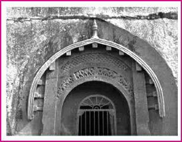
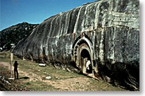
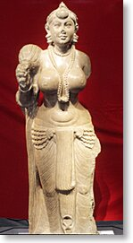
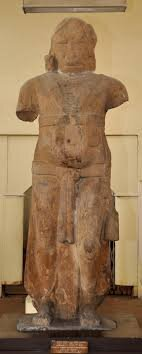
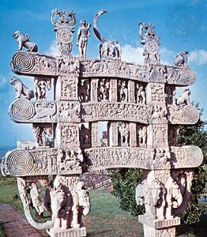
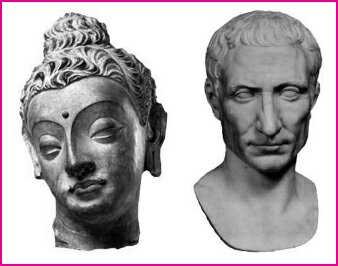
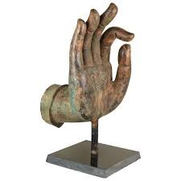
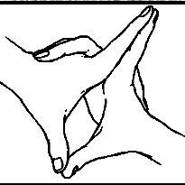

Mauryan Architecture- Part 2 | 24 Oct 2019
Mauryan Popular Art
Apart from the court art or royal patronage, cave-architecture, sculpture, and pottery took the expressions of art by individual effort.
- Cave Architecture: During the Mauryan period, caves were generally used as viharas, i.e. living quarters, by the Jain and Buddhist monks.
- Key Features: The caves during the Mauryan period were marked by a highly polished finish of the interior walls and decorative gateways.

- Example: The seven caves (Satgarva) in the Makhdumpur region of Jehanabad district, Bihar, were created by Mauryan emperor Ashoka for the Ajivika Sect:
- Barabar Caves (4 caves): Karna Chaupar, Sudama Cave, Lamarshi (Lomas Rishi) Cave, Vishwamitra (Vishva Zopri) Cave
- Nagaragunja Caves (3 caves): In Bihar were formed during the time of Dasharath, grandson of Ashoka , Gopi Cave, Bahayak Cave and Vedantika Cave.
- Key Features: The caves during the Mauryan period were marked by a highly polished finish of the interior walls and decorative gateways.
Ajivika Sect
- It was founded by Goshala Maskariputra (a friend of Mahavira, the 24th Tirthankara of Jainism) and was contemporary of Jainism and Buddhism.
- Ajivika sect is based on the philosophy that the affairs of the entire universe were ordered by a cosmic force called niyati (Sanskrit: “rule” or “destiny”) that determined all events, including an individual’s fate.
- Sculptures
- Two of the most famous sculptures of the Mauryan period are those of Yaksha and Yakshi.
- They were objects of worship related to all three religions – Jainism, Hinduism, and Buddhism.
- The earliest mention of yakshi can be found in Silappadikaram, a Tamil text.
- The torso of the nude male figure found at Lohanipur at Patna.
- Didargunj Yakshi was found at Didargunj village at Patna.
- Two of the most famous sculptures of the Mauryan period are those of Yaksha and Yakshi.
Pottery: Pottery of the Mauryan period is generally referred to as Northern Black Polished Ware (NBPW).
- Mauryan pottery was characterized by black paint and highly lustrous finish and was generally used as luxury items.
- Kosambi and Patliputra were the centers of NBPW pottery.
Post Mauryan Art and Architecture
With the decline of the Mauryan empire several small dynasties rose to power. Among them, Shungas, Kanvas, Kushanas and Shakas in the north and Satvahanas, Ikshavakus, Abhiras, and Vakatakas in Southern and Western India gained prominence.
- The architecture in the form of rock-cut caves and stupas continued, with each dynasty introducing some unique features of their own.
- Similarly, different schools of sculpture emerged and the art of sculpture reached its climax in the post-Mauryan period.
- Rock-cut Caves: The construction of rock caves continued as in the Mauryan period. However, this period saw the development of two types of rock caves – Chaitya and Viharas.
- Chaitya was a rectangular prayer hall with a stupa placed in the center, for the purpose of prayer and Viharas were used as the residences of the monks.
- Examples
- Udayagiri and Khandagiri Caves in Bhubaneshwar, Odisha were patronized by the Kalinga king Kharavela and are also known for the Hathigumpha inscription (in Brahmi script).
- Ranigumpha cave in Udayagiri is double-storied and has some beautiful sculptures.
- Stupas: Post Mauryan period stupas became larger and more decorative and wood and brickwork were replaced by stone.
- Torans: In the post-Mauryan period, the Shunga dynasty introduced the idea of torans (Torans reflect the Hellenisti influence) which were beautifully decorated gateways to the stupas.
- Examples
- Bharhut stupa in Madhya Pradesh.
- Sculpture: Post Mauryan empire three prominent schools of the sculpture came into prominence in three different regions of India namely Gandhara, Mathura, and Amravati schools.
- Gandhara: The Gandhara School of Art or Greco-Indian School of Art (First sculptural representation of Buddha in human form) has its origin in Greco tradition (Greek invaders brought with them the traditions of the Greek and Roman sculptors) which was further merged with the regional or local art of the time.
- Initial Development: Gandhara school was developed in the western frontiers of Punjab.
- Patronage: This school was patronized by both Shaka and Kushan rulers.
- Major centers of Gandhara school of art were Jalalabad (Eastern Afghanistan), Hadda (ancient region of Gandhara),Begram (Parwan province of Afghanistan) & Taxila (Pakistan).
- Key Features: Buddha was depicted in Gandhara Art, through four types of hand gestures called Mudras:
- Abahayamudra: Indicates fearlessness
- Dhyana mudra: Indicates meditative position
- Dharmachakramudra: Means turning the wheel of law.
- Bhumisparshamudra: Touching the earth with right hand and calling it to witness truth.
Mudras Related To Buddha of Gandhara School
- Vitarka Mudra: It indicates teaching and discussion or intellectual debate. 
- The tips of the thumb and index finger touch each other, forming a circle.
- Anjali Mudra: Indicates greetings, devotion, and adoration.
- Both hands close to the chest, palms, and fingers joined against each other vertically (Namaste posture).
- This is for Bodhisattvas (who aim and prepare to attain perfect knowledge).
- Uttarabodhi Mudra: It means supreme enlightenment.
- This Mudra is known for charging one with energy. It symbolises perfection.
- Varada Mudra: It indicates charity, compassion or granting wishes.
- Signifies five perfections: Generosity, morality, patience, effort and meditative concentration, through the five extended fingers.
- Karana Mudra: It indicates warding off evil.
- The energy created by this Mudra helps remove obstacles such as sickness or negative thoughts.
- Vajra Mudra: It indicates knowledge.
- This mudra signifies the importance of knowledge or supreme wisdom.
- Mathura: The sculptures of the Mathura school were influenced by all the three religions Buddhism, Hinduism, and Jainism.
- Initial Development: Developed in and around Mathura.
- Patronage: This school was patronized by Kushan rulers.
- Major Centres: Mathura, Sonkh and Kankalitila.
- Key Feature: Symbolism in the images was one of the key features of the Mathura school of art like Shiva was represented using linga and mukhalinga, Halo around the head of Buddha was decorated geometrical patterns and Buddha is shown to be surrounded by two Bodhisattavas Padmapani (holding a lotus) and Vajrapani (holding a thunderbolt).
- Amaravati: Unlike Gandhara and Mathura schools which focused on single images, Amaravati school laid more emphasis on the use of dynamic images or narrative art (like jataka tales).
- Initial Development: Amaravati school was developed on the banks of the Krishna river.
- Major Centres: Amaravati and Nagarjunakonda.
- Patronage: This school was patronized by Satvahana rulers.
- Key Feature: Tribhanga posture, i.e. the body with three bends was used excessively by Amaravati school in its sculptures.
Significance
- Development of Art and Architecture: Mauryas made a remarkable contribution to art and architecture, and introduced stone masonry on a wide scale.
- Polished Stone Pillar: High technical skill was achieved by Maurya artisans in polishing the stone pillars, which are as shining as the Northern Black Polished Ware.
- The stone statue of Yakshini in the form of a beautiful woman found in Didarganj (Patna) is noted for its Maurya polish.
- Pillars and Sculptor Development: Each pillar is made of a single piece of buff-colored sandstone. Only their capitals, which are beautiful pieces of sculpture in the form of lions or bulls, are joined to the pillars on the top.
- The erection of the polished pillars throughout India shows the spread of the technical knowledge involved in the art of polishing them
- Cave Architecture: The Maurya artisans also started the practice of carving out caves from rocks for monks to live in. Later, this form of cave architecture spread to western and southern India.
- Development of Terracotta Art: In the central phase of the Northern Black Polished Ware around 300 BC, the central Gangetic plains became the center of terracotta art. In Maurya rimes, terracottas were produced on a large scale. They generally represented animals (elephants) and women (mother goddesses).